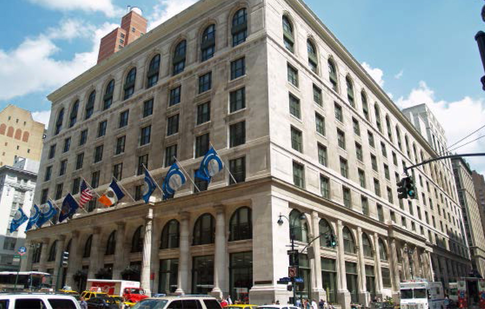

FINDING LANGUAGE CLASSES
| Queens Library Classes | |
|---|---|
|
Classes are taught by professional teachers and emphasize learning how to speak and understand English, including everyday situation vocabulary and grammar. Students even learn how to use the library and its services. The class levels are beginner, intermediate, and advanced. Students can register for classes during the Spring from January-May or the Fall from September-December. Each semester runs approximately 12 weeks.Students who would like to attend classes at Central or Flushing must fill out an ESOL Class Lottery Application. For more information on class registration, please refer to our flyer or call (718)-480-4300. |
|
| New York Public Library Classes | |
|---|---|
|
These classes occur throughout the entire year for durations of 10 weeks. Most classes meet two days each week, and two hours each day. Select classes meet on Saturday mornings for four hours. Classes are for beginner, intermediate, and advanced level students. Students must attend an information session to register for classes, and registration is required in order to attend these classes. Here are the types of classes: 1. ESOL Classes: For non-native speakers to improve listening, speaking, reading and writing. 2. Adult Basic Education Classes: For students who already speak English but want to improve their reading and writing. 3. Drop-in Classes : For learners to practice speaking with other people. In these classes, intermediate-level English for Speakers of Other Languages (ESOL) learners will have the opportunity to practice English by watching We Are New York videos and talking about them; talk with library volunteers about current events, New York City, family life, and holidays; or prepare for the United States citizenship exam. 4. High Beginner Level Conversation Classes: Available for students who have filed a USCIS N400 application, and are preparing to take the United States Citizenship exam in the next six to nine months. |
| City College of New York | 
|
|---|---|
|
If you are at least 19 years old, you can take ESL classes at The City College of New York for free! The program helps students develop proficiency in grammar, reading, listening, speaking and writing skills. The program consists of six levels starting from beginner (level 1) to advanced (level 6). The classes meet three days per week from 9:00 am - 12:00 pm or 6:00 pm - 9:00 pm. |
 |